What happens after the meeting ends?
Valuable opportunities are often lost because contact information is forgotten, misplaced or never revisited.
Inter-ActiveID was created to help companies, entrepreneurs and professionals remain present long after the conversation ends.
The meeting ends. Your business presence doesn't.
Scan the QR code (or click on it) to discover how it works.
¿Qué ocurre después de una reunión?
Muchas oportunidades de negocio se pierden porque la información de contacto es olvidada, extraviada o nunca vuelve a consultarse.
Inter-ActiveID fue creado para ayudar a empresas, emprendedores y profesionales a mantenerse presentes mucho después de terminada la conversación.
La reunión termina. La presencia de tu negocio no.
Escanea el código QR (o haz clic en él) para descubrir cómo funciona.
Infomed is a system that allows caregivers or rescuers to contact designated emergency contacts by various means:
What suits you best, a T-shirt, a medal, or a bracelet?
Scan this QR code (or click on it) for more information.
Infomed es un sistema que permite al cuidador o rescatista contactar a los contactos de emergencia por diversos medios:
¿Qué es más conveniente para usted, una camiseta, una medalla o un brazalete?
Escanea este código QR (o haz clic en él) para obtener más información.
Online digital invitations for your special event with ease.
Add music, a countdown, assistance confirmation, and more.
Memorable, eco-friendly, and practical.
¡Invítalos a tu evento especial con Invite-U-2!
Añade música, cuenta regresiva, confirmación de asistencia y más.
Invitaciones inolvidables.